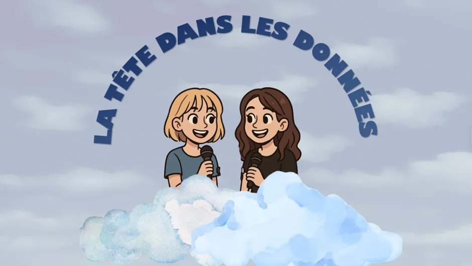

La tête dans les données, the podcast putting women scientists in the spotlight.


If you're a woman in science, you've probably already noticed the lack of females, not only in research, but also in the way science is shared with the public. We felt it too.
We’re two PhD students who wanted to hear (and share) more about the amazing research led by women. That’s why, last December, we launched La tête dans les données, a French-speaking podcast that gives the mic to female scientists and their work.
In each episode, we interview a scientist about her area of expertise. Our goal is to bring state-of-the-art research into people’s ears, with an applied angle and accessible tone.
So far, we’ve focused on psychology and neuroscience (our domains of expertise as PhDs in Cognitive Neuroscience) with themes such as emotional eating, addiction and consciousness, but we are also excited to explore other scientific fields soon.
Who’s it for?
This podcast is for anyone who enjoys science but isn’t necessarily trained in it. We want to make cutting-edge research accessible without dumbing it down, and to highlight the amazing women who are driving it forward.
Running this podcast has inspired us and gotten us really excited about all those topics, and we hope it sparks interest, curiosity, and maybe even a bit of scientific inspiration for younger women.
Gender bias in academia
In our second episode, we spoke with Anaïs Llorens, first author of the paper “Gender bias in academia: A lifetime problem that needs solutions,” co-written with over 40 researchers. Together, they explore how gender bias continues to shape academic careers and contributes to persistent inequalities.
In the episode, Anaïs shares why this problem is far from solved and what steps can be taken to change things. Listen to it here: Voyage au centre du cerveau: lirons nous un jour dans vos pensées ? avec Anaïs Llorens (#2)
And to all the episodes of our channel here: https://www.youtube.com/@LaT%C3%AAteDansLesDonn%C3%A9es
Are you a woman in science, or do you know someone who’d make a great guest? We’re always looking for new voices and new ideas, don’t hesitate to reach out!
Laure von der Weid & Malika Tapparel
From the 500 Women Scientists Bern-Fribourg archive. Originally published 5 September 2025.
Explore more stories